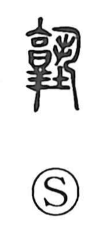

塾

Uncategorized
Kun: | On: juku
cram school ・ private school
Explanation
A phono-semantic character with 孰 (juku) providing the sound, 塾 originally designated a wakibeya—an auxiliary room beside a building’s entrance. This side chamber was used for ceremonies such as coming-of-age rites and, by its quiet and set-apart nature, became a place for study. From this setting the graph took on the sense of a study room and then a place of learning. In Japan it came to name private academies, especially in the Edo period, and today commonly refers to cram schools alongside regular schools.